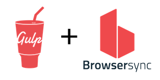

Gulp Masterfy Assets

Original:
19KB

Compressed:
7KB
Installation:
| Command | Description |
|---|---|
npm install |
Installing all application dependencies |
gulp sass |
Compile all SASS files into CSS |
gulp css |
Minify + Combine + Adding Prefixes to CSS supporting major browsers |
gulp js |
Combine and minify JS files |
gulp imgs |
Compress all PNG, JPG, GIF and SVG graphic files |
gulp vendors |
To copy all vendors / plugins assets to dist directory |
gulp clean |
To clean/delete your dist directory, dist can be built fresh again |
gulp build |
Build all the assets for production |
gulp watch |
Constantly watching and reloading browser on changes to (SASS, CSS, JS and HTML) files. |
npm start |
Alternative command for
npm watch command.
|